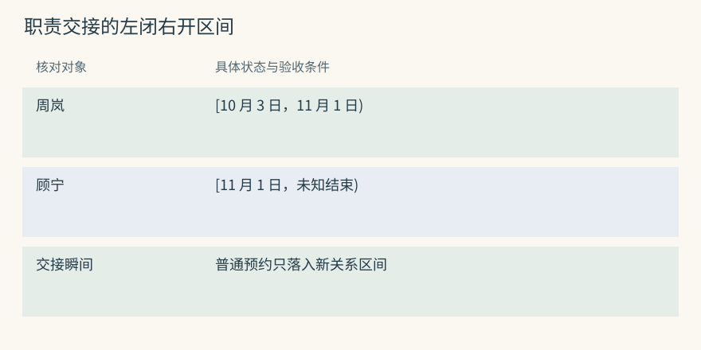
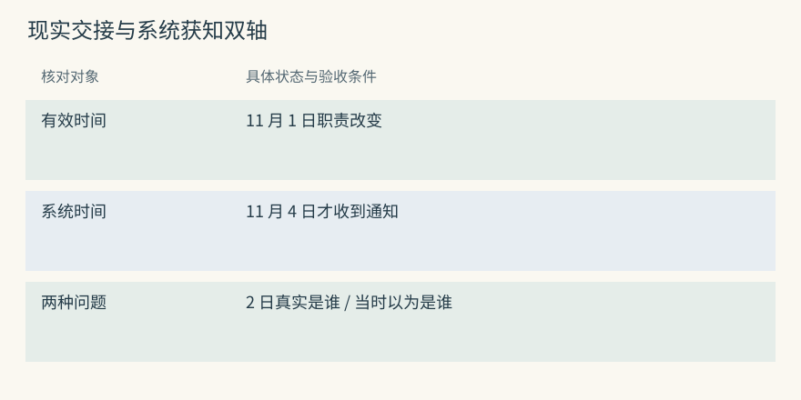
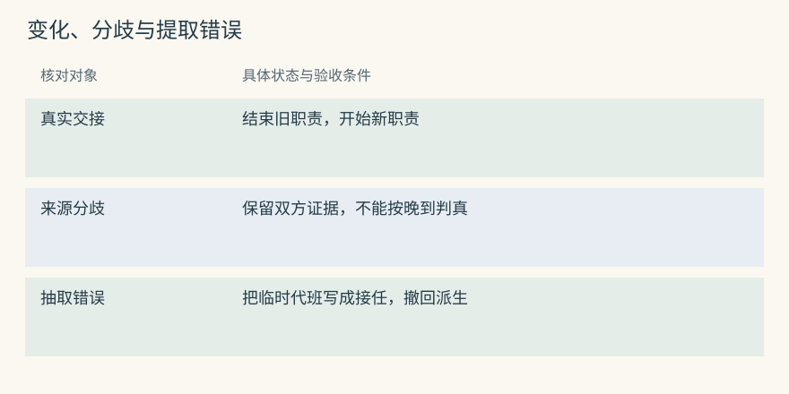
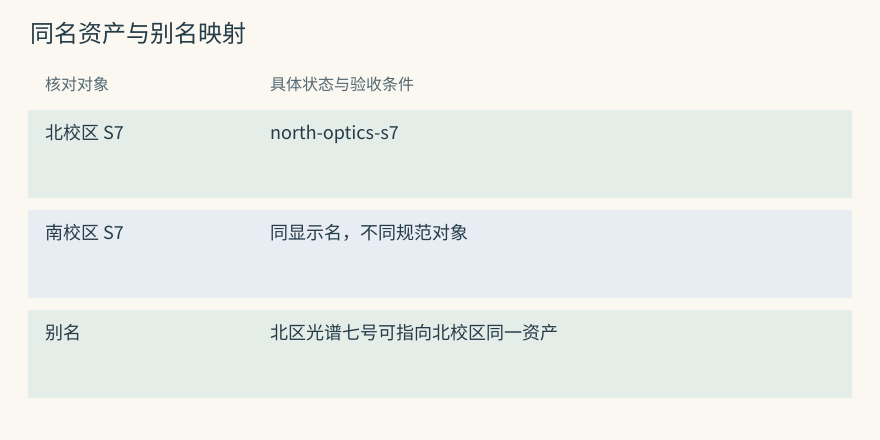
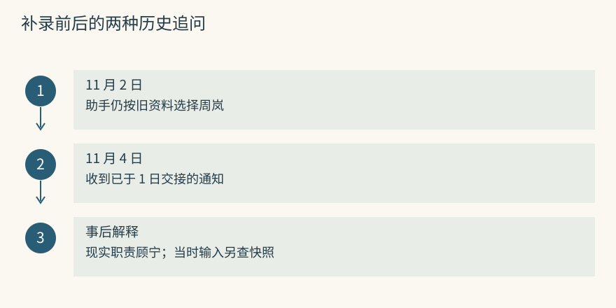
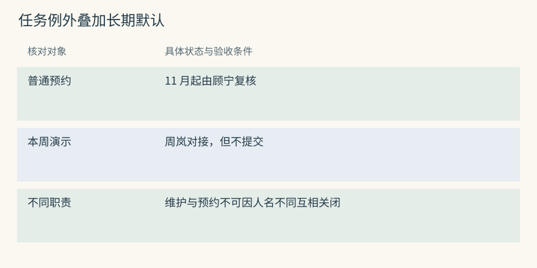
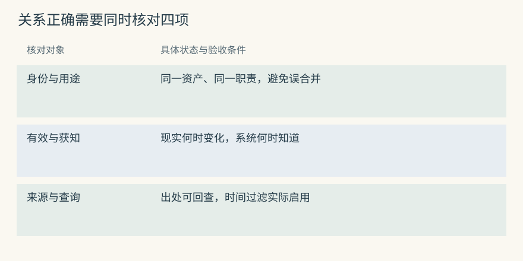

时间、冲突与知识图谱
两句话相反，也可能都曾经正确
10 月 3 日起，S7 的预约由周岚复核。11 月 1 日开始改由顾宁。助手直到 11 月 4 日才收到交接通知。今天问“找谁复核”应选择顾宁，追问“10 月 20 日为什么找周岚”则需要旧关系，不能把当前姓名套回过去。
可以把职责表示成两个区间：周岚对应 [10 月 3 日, 11 月 1 日)，顾宁对应 [11 月 1 日, 未知结束)。左闭右开让交接瞬间只落在新关系上。结束为空只表示尚未确认结束，并不承诺永远有效。
Mem0 可以保存带日期的交接陈述，但应用需要解释业务区间；Graphiti 可将开始与结束保存到事实边。两者都要让查询明确目标日期。只把旧、新姓名一起丢给回答模型，或只按最后入库排序，都会把日期选择留给一次临时猜测。
源码与边界（选读）

查询 10 月 20 日，旧关系仍成立；查询 11 月 1 日交接时刻，新关系成立。还应定义时区和日内交接时刻，避免将“1 日起”在不同机器上解释成不同瞬间。
Mem0：到期隐藏与现实有效区间不同
expiration_date 让记录在到期后退出默认搜索或列举，可以通过 show_expired 查看。它表达展示期限，不自动形成“周岚在十月有效，顾宁在十一月开始”的完整历史。
本地 OSS 快照还会拒绝顶层 timestamp 参数，不能套用托管时间接口。若业务需要区间，应在外层维护字段和版本，确认底层过滤实际执行。设置一张卡下月不展示，与确认现实职责何时交接不是同一动作。
Graphiti：当前视图需要明确时间过滤
边的 valid_at、invalid_at 表达关系的业务有效性。已知开始时间时，时点 t 的条件通常为开始不晚于 t，且结束为空或晚于 t。开始未知的关系要另定政策，不能自动等同于任何时点都成立。
SearchFilters 能表达日期比较，但默认空过滤不意味着所有查询都自动给出严格当前视图。应检查调用、选定配置与 driver 的行为，用交接前、交接点、交接后三题核对。
有效时间和录入时间分别回答什么
职责从 11 月 1 日改变，是现实有效时间；系统 11 月 4 日才知道，是录入时间。两条轴能区分“2 日真实复核人是谁”和“2 日助手根据当时资料会找谁”。第二个答案可能仍是周岚，解释的是当时知识，不是为错误现实状态背书。
同时保留两种时间的思路称为双时间。Graphiti 的边包含有效日期和创建、系统过期等字段，材料也有参考时间。字段提供表达能力，完整历史查询还依赖写入裁决、保存版本及过滤实现，不能看到四个时间字段就认定任意过去视图都能直接还原。
Mem0 的 created_at 说明记录何时创建，updated_at 说明何时改动；Markdown 文件和 Git commit 也主要说明编辑历史。可以在正文里写明“1 日起”，但系统处理时间不会自动替读取者执行业务区间判断。
源码与边界（选读）

把 Graphiti 的“某日有效”写成实际过滤
以下片段只构造本地类型，不初始化图服务。假设查询 11 月 2 日当地午夜有效的职责，并且只接受开始已知的关系。真正请求还需配置模型、图 driver 和可信的 group 范围。
from datetime import datetime, timedelta, timezone
from graphiti_core.search.search_filters import (
ComparisonOperator, DateFilter, SearchFilters,
)
campus_zone = timezone(timedelta(hours=8))
when = datetime(2026, 11, 2, tzinfo=campus_zone)
filters_at_day = SearchFilters(
valid_at=[[
DateFilter(
date=when,
comparison_operator=ComparisonOperator.less_than_equal,
)
]],
invalid_at=[
[DateFilter(comparison_operator=ComparisonOperator.is_null)],
[DateFilter(
date=when,
comparison_operator=ComparisonOperator.greater_than,
)],
],
)同一字段外层列表表示 OR、内层列表表示 AND，不同字段再共同约束。上面等价于 valid_at <= when 且 invalid_at IS NULL OR invalid_at > when。将 when 改成 10 月 20 日应选择周岚，改成 11 月 2 日应选择顾宁，前提是写入已经正确维护了这些区间。
如果允许未知开始时间，必须另加分支并说明使用政策；高风险预约可以在未知时请求核实。此片段没有实现“2 日系统当时知道什么”。那需要再限制系统创建与过期视图，并保证旧版本未被覆盖。
Mem0 的 metadata 过滤可以支持外层业务日期方案，但普通 search(reference_date=...) 在该本地快照被拒绝。即使后端能比较日期，若旧记录没有正确结束，也仍会得到多个当前值。查询参数不能补救缺失的写入状态。
Mem0：created_at 不能被当成业务生效日
默认创建时间来自当前 UTC，更新保留原创建时间并改 updated_at。若 4 日收到 1 日的交接通知，应保留 4 日录入审计，另存业务生效日，而不是伪造创建时间来表示现实变化。
外层版本模型还要决定结束旧值和选择当前值的逻辑。history() 可以解释某卡何时被修改，却不直接提供所有事实在任意过去时刻的全局视图。解释一次历史调用时，最好保留那次实际读取的版本标识。
Graphiti：reference_time 是相对表达的锚点
Episode 的 created_at 来自处理时刻，valid_at 来自传入 reference_time。抽取将参考时点与材料结合，理解“上周”“明日起”等表达。它不是把材料中的每条关系都强行设为同一天生效。
例如 4 日处理“1 日已交接，8 日开始启用新表单”，两条关系有不同业务日期。应用应核对每条边的时间输出。后台重试时继续使用原参考时间，避免相对表达随重试日期漂移。
三种“冲突”要采取三种动作
真实状态变化可以结束旧关系并开始新关系，比如正常职责交接。来源分歧则要保留各自证据：通知说已交接，值班记录说尚未完成，不能只凭后录入就认定一方错误。提取错误需要纠正派生内容，例如原话只说代班，生成结果却写成永久接任。
三种情况可能使用相近人名和句式，文本相似度只能帮助找到相关材料，不能独立决定应该关闭、并存还是撤回。MCP 的可选矛盾启发式能提出待核对候选，但不等于证明语义否定。Hippo 的纠正关系也不能由价值衰减替代。
Mem0 追加两份陈述后，外层需要说明各自证据类别和范围；Graphiti 在边解析中决定是否重复或矛盾，但模型也可能误判。对本周三代班，应连接到任务或时间条件，而不是让长期职责全部结束。
源码与边界（选读）

看到“顾宁复核”时，先问复核哪类申请、哪台仪器、哪段时间。只有签名相同的两项要求，才有比较冲突的基础。若材料省略了关键范围，确认比自动改旧记录更合适。
Mem0：追加保留分歧，裁决仍需应用
相反陈述可以同时进入事实库，update() 允许显式纠正，却不替调用者证明哪份来源可信。来源报告与工具验证应分开保存，确定性审核或人工核实再决定当前视图。
最新创建时间也可能来自补录旧事，不能作为“新状态一定胜出”的通用规则。若是提取错误，应该返回原事件重建候选；若是现实变化，则保留旧状态曾成立的历史，不宜把旧文字当作错误抹去。
Graphiti：时间关闭只作用于已判为矛盾的候选
resolve_extracted_edge() 先判断重复和矛盾，resolve_edge_contradictions() 再按时间窗口处理。区间不重叠可跳过；确认替代且旧开始早于新开始时，可将旧 invalid_at 设为新开始，系统 expired_at 记处理时间。
时间运算只处理已给出的裁决，不负责独立判断“演示代班”与“长期职责”是否互斥。测试应同时覆盖语义判断和边界运算，不能只验证日期类型合法。
同名仪器怎样映射到规范资产
标题里的同一对象问题，在仪器室对应两台都叫 S7 的设备。北校区 S7 属于光学实验室，南校区 S7 属于材料中心。它们的名字相同，复核人员和证书却不能互相借用。时间区间再正确，端点合错仍会得到错误答案。
相反，“北区光谱七号”和资产号 north-optics-s7 可能指同一台仪器。拆成两个节点会让交接通知只连到别名，原资产查不到更新。实体解析需要在过度合并与过度拆分之间做判断，校区、资产号和来源上下文都能提供约束。
Mem0 的实体链接会影响加分和相关记录归集，Graphiti 的 UUID 映射直接决定边端点。Cognee、HippoRAG 也利用对象连接，但不能因此假定它们默认维护 Graphiti 式时间边。先明确问题是身份、关联到达，还是历史状态，再选择机制。
源码与边界（选读）

可准备三份材料：北校区 S7、南校区 S7、北区光谱七号。正确结果是两个规范资产，其中第一和第三同一身份。验收应看 UUID 和资产来源，而不是只看画面上有几个“S7”。
Mem0：实体关联使用规范文本和近邻匹配
批量链接先规范化名字，优先精确匹配，缺少匹配时再考虑达到阈值的语义近邻，并合并 linked_memory_ids。身份范围参与搜索，但业务上的校区、项目或别名仍需要明确表达。
错误链接不会一定改正文，却可能给另一校区事实加分。若发现南校区职责被高排，除了检查事实 payload，也要检查辅助实体关联和范围。修正文后仍可能需要刷新这些派生链接。
Graphiti：UUID 映射直接改变关系端点
实体解析将临时节点映射到已有规范节点，边端点随之替换。合并正确时能连接别名材料，合并错误时会将两校区职责和证书关系串在一起。
身份错误的影响可能扩展到后续材料，不能只修改一条边就结束。回归题需要检查别名能连通、同名不能串线，再检查当前和历史关系。端点与时间是相互独立的验收维度。
晚到的消息为什么不能只按最新一条处理
11 月 2 日助手仍按旧资料建议找周岚，4 日才收到交接通知。现在重新问“2 日真实职责是谁”，可依据补录材料回答顾宁；问“助手当时为什么找周岚”，则要解释当时资料缺失。后一个问题不能只拿今天修正后的图重跑一次搜索。
有效区间支持现实历史，系统时间和版本支持已知历史，实际输入快照帮助解释一次具体决策。这三种证据相关，却不完全等价。即便能够重建当时库状态，也未必知道当时哪些候选真正进入了输入，因此请求级记录仍有价值。
再设补录通知只覆盖北校区夜间预约，白天职责不变。原先若把所有预约都改为顾宁，就属于范围过宽，需要补限定并纠正派生视图。晚到事件不仅挑战时间排序，也会暴露关系签名不够细的问题。
源码与边界（选读）

晚到不表示事件本身更晚。可以把每份材料的业务日、来源日、录入日并列，再写它支持的范围。只保留最后一项，会无法区分旧事补录与新一轮交接。
Mem0：历史回答需要外层事件和版本
history() 追踪一张事实的变化，不是任意时点完整知识库的读取接口。要解释 2 日那次建议，宿主应保存请求实际取回和注入的 ID、版本及必要来源标识。
4 日将当前文字更新为顾宁，可以修好今后回答，却不能从新正文倒推过去输入。若业务要求审计，版本与请求证据应从开始设计，日志保留也应遵守个人资料政策。
Graphiti：双时间字段没有免除查询设计
expired_at 说明系统何时使旧边过期，能辅助分析晚到修正，但任意过去知识视图仍需创建、过期和保存版本的组合。节点摘要被更新后，当前 summary 不保证等于过去摘要。
解释历史调用时，可以保留实际候选、选用边和来源版本。图状态回答可见知识，请求记录回答那次实际用了什么。两者联合才能区分资料当时未知与当时已知但没被选中。
单次例外不会自动结束长期规则
“本周教学演示由周岚对接”与“普通预约从 11 月起由顾宁复核”可以同时成立，因为任务用途不同。默认只在没有更具体要求时采用。读取顺序应先处理当前任务明确约束，再应用一般规则，而不是把所有人名差异都当成冲突。
仪器管理也未必是单值关系。S7 的预约归光学实验室，电气维护归设备保障组，两条“负责”不能相互关闭。应用要定义职责用途、资产组件和是否允许多个对象；模型只看到一个笼统“负责”关系时，更容易作过强替代。
如果两份可信来源确实在同一范围、同一时间给出不同复核人，可以展示分歧并请求核实。相关分数相差一点不提供真实性裁决。准备提交真实申请时，查询当前管理系统或询问有权人员比让历史文本自行投票更合适。
源码与边界（选读）

将长期规则和任务例外放在不同的键上，读取时按具体程度组合。不是所有例外都需要改默认，也不是所有默认都应该锁进会话范围。生命周期和读取层级需要一起设计。
Mem0：任务 scope 与长期 scope 要有明确读取关系
演示安排可带任务标识，长期复核要求保留在项目或资产范围。若把长期要求放进某次 run_id，下次会话就可能再也搜不到；若把任务限制放成全局事实，又可能永久阻止申请。
SDK 的范围参数决定存取集合，并不自动建立业务上的“任务覆盖默认”规则。宿主应按当前任务读取例外，再读取默认，并在输入里区分角色。当前消息明确安排应优先被执行，但不能悄悄改掉长期属性。
Graphiti：关系签名不能忽略组件和情境
可用任务节点，或在边中保留用途、时间、组件等限定，区分演示对接和预约复核。若全抽成“S7 负责人”，模型可能将兼容关系错误判为矛盾。
建模后还需检查 resolution 是否结束了不该结束的边。正向验收是新例外存在，反向验收是长期默认仍有效。只看新增事实内容，会漏掉破坏原状态的副作用。
动手检查
4 日收到：“1 日起夜间预约改由顾宁，本周演示仍找周岚，白天预约另见原通知。”请写出三个适用范围，以及系统获知日期。问 2 日夜间找谁，与问 2 日助手已知道什么，需要哪些不同证据？
答案提示：前者需要有效区间和范围，后者需要系统版本或当次实际输入。未知的白天规则不能从夜间交接推断。若全部按最新创建时间选一条，会丢掉用途和业务日期。
实现笔记与源码对照（选读）
为什么时间是一等公民
证书曾覆盖十月，并不意味着十一月仍有效；复核人更换也不意味着旧办理记录错误。要让历史和当前都可解释，至少保存业务有效区间，并明确边界语义。只保最新值能方便当前读取，却会丢失过去的事实状态。
S7 普通预约复核 → 周岚，有效于 [2026-10-03, 2026-11-01)
S7 普通预约复核 → 顾宁，有效于 [2026-11-01, 未知结束)
系统收到交接通知：2026-11-04双时间进一步保留何时知道。它能表示晚到、纠正与未来生效，但实现必须保存对应版本并提供相应查询，不能仅在表里放两组日期。Graphiti 的材料和事实时间提供重要结构，应用仍应按业务题目验证。
Graphiti 写入路径
沿 主入口 的 add_episode()，可追到材料建立、实体抽取和解析、边抽取与去重、时间矛盾处理、节点属性更新及保存。顺序中每一步都可能影响最终证据。
通知 notice-31
找对象：哪台仪器、哪个人、什么任务
定身份：别名是否指同一资产
定关系：长期交接还是临时对接
定时间：何时开始、旧边何时结束
保存：材料、端点、关系、来源和检索内容抽取依赖能稳定产生结构化输出的模型。较小或本地模型的 schema 遵循需要验证，失败恢复也要单独设计。读取示例看起来简短，不能说明建图成本低或没有异常边界。
三种冲突
状态变化保留曾经正确的旧值；来源分歧保留竞争证据；派生错误则纠正不被原文支持的结果。处理动作应由情况决定，而非统一“新记录覆盖旧记录”。对未知情况，可以先标为待核实，不让它影响高风险提交。
Graphiti 在关系解析和区间维护中处理一部分变化，Hippo 记录纠正与替代，Letta 的文件版本帮助查看编辑。Git 能恢复某段文字，却不能裁定现实职责；强度下降也不能证明一条旧陈述曾经是假的。
用同一条变化检查三种存储
把“4 日才得知 1 日夜间复核人改为顾宁”送入同一组测试。Graphiti 应核对新边业务开始、旧边结束及材料系统时间；Mem0 需要外层业务字段和版本选择，创建时间本身不够；文件方案可以写明日期和来源，但需要读取器执行范围规则。
Memobase 更新当前画像后，原输入是否仍保留受其保留策略影响。Basic 或 Letta 的 Git 历史也可能包含个人材料。Cognee、HippoRAG 的来源连接帮助回查，但不自动提供相同双时间协议；A-MEM 更新描述也不等于保留旧描述的有效区间。
验收题应包括交接前、交接点、交接后、系统获知前、未来生效和临时例外。对每个项目分别列“能直接表达”“应用补充”“不能据字段认定”，比只比较是否有时间戳更准确。
HippoRAG 的关联检索
假设一段手册说“S7 由光学实验室管理”，另一份通知只说“光学实验室夜间预约由顾宁复核”。查询中的 S7 可以作为相关种子，通过对象连接找到支持段落。这是关联到达问题，与筛选 10 月或 11 月职责的时间问题不同。
HippoRAG 使用知识结构与 Personalized PageRank 等机制将种子信号传播到 passage。原论文在特定多跳问答设定中报告相对基线收益和检索成本优势，第二版扩展对事实记忆、理解和联想的研究。论文结果受数据、基线、reader 和预算约束，不能推成共享仪器助手已经获得相同收益。
它适合研究“为何没有查询字面的段落仍值得读取”，不是开箱即用的多租户个人画像。若需要实时职责交接，还要提供对应时间和访问治理，而不能仅靠图传播分数选择姓名。
何时不用图
资料少、问题直接查单条规程、写入延迟严格时，可以先用受限混合检索。实体定义尚不稳定，或团队没有图后端恢复与运维能力时，图可能增加难以解释的错误。先用失败题证明需要第二跳，再付建图成本。
比较实验保持同一原始材料和最终输入额度，测图是否补到必要证据，同时统计错误连接和延迟。Cognee 等图加模型路线的研究也说明效果依数据集、配置和指标变化，不能期待一套超参数对所有仪器场景都有效。
冲突裁决：模型判断与相似度启发式
Graphiti 的关系语义与时间解析、TencentDB 的 L1 候选判别、Memobase 的画像合并处理不同对象。后两者能改变当前内容，不因此自动拥有相同的关系双时间边。当前视图变简洁，与历史仍可解释也要分别验收。
MCP 的 矛盾检测模块 使用可选启发式，在默认相似度 0.4 到 0.75 的近邻候选中按创建时间确定新旧，建立 CONTRADICTED_BY 与 superseded_by 等关系。检测和 on-store 需明确启用，它没有逐条模型证明语义否定。
“周岚复核预约”和“顾宁复核耗材”可能很相关，却并不冲突。使用前应预览、人审并测误失效。Hippo 的冲突与 strength 也要分开；A-MEM 的描述演化、Letta/Basic 的编辑历史都需要明确业务日期，不能从修改动作倒推出现实变化。
图关联：哪些项目真的改变了到达路径
Basic 的显式 relation 和 URI 邻域、A-MEM 的模型建议 link、Hippo 的池内 graph stream 与池外 graph recall，增加或排列证据的方式各不相同。MCP 的 typed/association edges 还服务连接和治理，不自动等同于 PPR。
TencentDB 的 Wiki 链接和 CodeGraph 符号结构、MemOS 的可配置文本图、Cognee 的 schema 图、HippoRAG 的 phrase/passages 图、Graphiti 的时间事实边，分别服务不同查询。评估前写清是找第二跳、回查来源还是筛历史状态，再检查路径是否真的改变候选到达，而非只看项目是否宣称支持图。

项目对照速查（选读）
本章对照结论
| 项目 | 与时间或关联有关的状态 | 应额外验证 |
|---|---|---|
| Graphiti | 参考日、有效区间、系统时间与材料 | 默认查询和完整历史视图 |
| Hippo | 纠正/替代、价值与图路径 | 价值不能裁定事实真伪 |
| MCP Service | 可选相似度矛盾启发式 | 相关不同事实的误失效 |
| TencentDB | L1 判别、资产和 Wiki/CodeGraph | 层级内容不全是时间边 |
| Mem0 | 新增事实、到期隐藏和实体索引 | 外层业务版本 |
| Memobase | 当前属性和事件 | 原材料保留策略 |
| MemoryOS | 页面、主题和长期整合 | 旧值是否仍可重建 |
| Cognee | schema 关系与来源 | 实际管线的时间协议 |
| HippoRAG | 事实和段落来源、传播路径 | 不自动裁定历史当前值 |
| A-MEM | 描述、标签与 links 变化 | 旧描述区间不应假定存在 |
| Basic Memory | 显式链接与文件历史 | 时间筛选由读取器实现 |
| Letta Code | 提交与后续编译版本 | 编辑日不是业务生效日 |
| MemOS | 已启用文本后端或模型资源 | KV/LoRA 不等于逐事实查询 |
| Agent Beacon | 动作时间线与观察类别 | 事件未替应用裁决冲突 |
| Hermes Jev Skills | 日期锚点与候选判别 | 不持有完整历史事实图 |